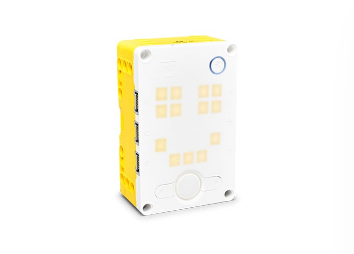
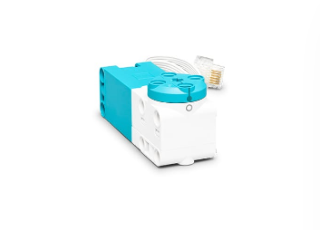
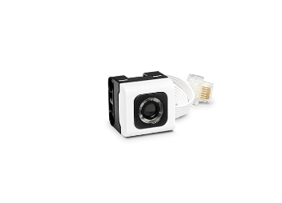
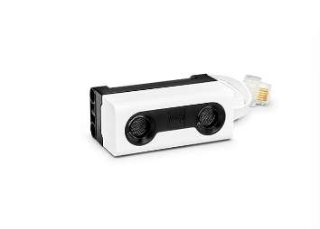
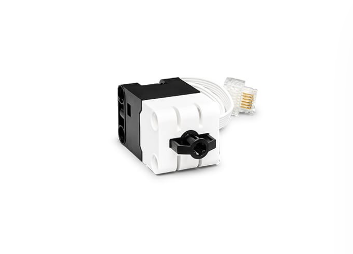
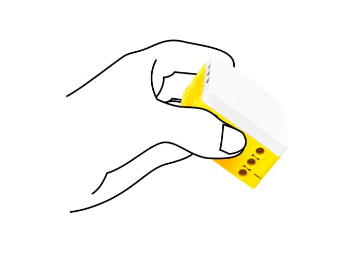

填好身分，把官方 App 設成中文，再找齊六樣東西。
「六樣東西找齊，語言選中文，三分鐘內。零件先不要拼。」
馬達和感測器的線，都插在主機側邊的接口上。

側邊有 6 個接口，標著 A B C D E F（App 叫「連接埠」）。
每個接口都一樣，插哪個都可以。
一個接口一次只能接一個零件。程式寫 A，零件就要插在 A。
「六個接口長得一樣，插哪個都行。重點是：程式裡寫 A，零件就要在 A。官方教學每次都插 A，換零件先拔掉。」
答對才能往下走。答錯會告訴你為什麼，可以再選。
1. 接口 A 到 F，每個只能接固定的零件嗎？
2. 程式叫的是 A 口，但馬達插在 C 口，會怎樣？
3. A 口插著馬達，還想接顏色感測器，怎麼辦？
答完看右上角的星星；沒過的來找老師。
連上線，程式才傳得到主機。有兩種連法。
App 會問電源鍵的顏色：綠色直接繼續，白色舉手找老師。
「兩種連法擇一：藍牙或 USB。今天用 ○○。三步一樣：開機、準備連線、在視窗裡選你們的主機。」（前一天確認教室電腦能用哪種後填好。）
在官方 App 按下「連接」，連上你們的主機。
連上線以後，下一項要新增 Python 專案。
「這一步在官方網頁裡做。連上以後不要關這個分頁，下一項『燈陣』接著做。」
兩題都答對，就可以開始認識零件。
1. 連線前，主機要先怎麼做？
2. 視窗裡找不到主機，先檢查什麼？
答完看右上角的星星；沒過的來找老師。
主機是機器人的大腦，程式就在它裡面執行。
正面 25 顆小燈，叫「燈陣」（App：矩陣燈）。
這一課讓燈陣亮出笑臉。
「開始」積木
會啟動拼在它下面的所有積木，就像 Scratch 的「當綠旗被點擊」。
English：when program starts
「點亮」積木
決定 25 顆小燈哪幾顆亮，拼成圖案。
English：turn on
from hub import light_matrix
light_matrix.show_image(light_matrix.IMAGE_HAPPY)import 是借工具箱：這行借來「燈陣」的工具。show_image 顯示一張內建圖案，IMAGE_HAPPY 是笑臉。light_matrix.set_pixel(0, 0, 100)100 是最亮。「主機是大腦，燈陣是它的臉，等一下用程式讓它笑。」積木只講兩個：『開始』和『點亮』。積木上的字是 App 的簡體，下面是繁體說法。
在官方 App 讓燈陣亮出笑臉，再改圖案。
IMAGE_HAPPY 改成 IMAGE_SAD，再按一次播放。from hub import light_matrix
light_matrix.show_image(light_matrix.IMAGE_HAPPY)from hub import light_matrix：借來燈陣的工具。每支程式開頭都要先借要用的工具。from hub import light_matrix
light_matrix.write('Hello, World!')write 會讓文字從右邊一個字一個字跑過燈陣。'Hello, World!' 裡面的字，換成你的名字再播放。引號要留著，兩邊用同一種。「每支程式開頭都要先借工具（import），再寫要做的事。先照貼，看懂最後一行就好。」
「回到官方分頁，照畫面做，做完勾下面的檢核。」
答對拿一顆星。
1. 主機正面那 25 顆小燈，叫什麼？
2.「當程式啟動時」這塊積木做什麼？
2. light_matrix.show_image(light_matrix.IMAGE_HAPPY) 這一行做什麼？
3. 想改燈陣的圖案，改哪裡？
3. 想把笑臉換成哭臉，改哪裡？
答完看右上角的星星；沒過的來找老師。
馬達會轉，之後車子的輪子靠它帶動。

馬達（App：電機）用一條線接主機。
這一課插在 A。
「設定速度」積木
數字越大，馬達轉得越快。
English：set speed to
「運行幾圈」積木
讓 A 口的馬達順時針轉 1 圈。
English：run for rotations
motor.run_for_degrees(port.A, 360, 720)port.A：馬達插在 A 口。360：轉 360 度，就是 1 圈。720：速度，是「每秒轉幾度」，數字越大轉得越快。import motor 和 from hub import port，借來馬達和接口的工具。積木的速度是「%」，Python 的速度是「每秒幾度」，數字不能直接搬過來。
「馬達是力氣的來源。積木上的 A 是『馬達插在哪個接口』。今天只讓它轉一圈。」
插好馬達，讓它轉起來，再改速度。
先猜：速度從 720 改成 360，馬達轉 1 圈會…
port.A）。720（速度）改成 360，再按一次播放。import motor
from hub import port
motor.run_for_degrees(port.A, 360, 720)port.A；Console 有沒有報錯。import：前一段沒刪乾淨。先猜：速度從 20 改成 75，馬達轉 1 圈會…
「回到官方分頁，照畫面做，做完勾下面的檢核。」
答對拿一顆星。
1. 馬達主要做什麼？
2. 速度從 20 改成 75，馬達會…
2. 想讓馬達只轉半圈，度數（第二個數字）要寫多少？
3. 馬達插在 C，積木卻選 A，會怎樣？
3. 馬達插在 C，程式卻寫 port.A，會怎樣？
答完看右上角的星星；沒過的來找老師。
顏色感測器像眼睛，認得出面前東西的顏色。

顏色感測器（App：顏色傳感器）也用一條線接主機。
先拔掉馬達，再把它插在 A。
「看到某個顏色」積木
看到紅色，才執行下面的積木。
English：when color is
「點亮」積木
剛才燈陣用過，讓燈陣亮起來。
if color_sensor.color(port.A) == color.RED:
light_matrix.show_image(light_matrix.IMAGE_HAPPY)color_sensor.color(port.A)：問 A 口的感測器「現在看到什麼顏色」。color.RED：紅色的名字。==（兩個等號）：問「是不是一樣」。一個 = 是「放進去」，不一樣。if：條件成立，才做底下縮排的那一行。「顏色感測器是眼睛。這個積木長得像『開始』積木，但它是在等：看到紅色才開始。」
看到紅色就亮燈，再改成認黃色。
color.RED 改成 color.YELLOW，換黃色 LEGO 方塊試試。from hub import port, light_matrix
import color_sensor
import color
import time
while True:
if color_sensor.color(port.A) == color.RED:
light_matrix.show_image(light_matrix.IMAGE_HAPPY)
else:
light_matrix.clear()
time.sleep_ms(50)while True:：一直重複，所以感測器會一直看。else:：不是紅色的時候做這一行，把燈陣關掉。time.sleep_ms(50)：每次歇 50 毫秒（1000 毫秒是 1 秒）。== 有沒有寫成一個 =。「回到官方分頁，照畫面做，做完勾下面的檢核。」
答對拿一顆星。
1. 想讓機器人認出紅色，用哪個零件？
2. 程式設定看「紅」，拿黃色 LEGO 方塊靠近，會怎樣？
2. color_sensor.color(port.A) == color.RED 裡的 == 是什麼意思？
3. 想改成認黃色，改哪裡？
3. 想改成認黃色，改哪裡？
答完看右上角的星星；沒過的來找老師。
距離感測器知道前面的東西有多遠。

距離感測器（App：距离傳感器），先拔掉上一個零件，插在 A。
官方說明：它看得到約 200 公分。積木上的數字，是把這 200 公分切成 100 份，取幾份。
1 份約 2 公分，所以 8 份約 16 公分。
Python 量出來的數字單位是毫米，10 毫米是 1 公分。
「東西靠近」積木
東西離感測器比「8 份」更近（約 16 公分，官方說明），才執行下面的積木。
English：when closer than
「警笛聲」積木
主機發出 0.2 秒的警笛聲。
English：play beep for seconds
d = distance_sensor.distance(port.A)
if 0 < d < 160:
sound.beep(440, 200, 100)d = ...：把量到的數字存在 d 裡。0 < d，不然 -1 也算「小於 160」。160 毫米就是 16 公分，約等於積木的「8 份」。sound.beep：主機發出 200 毫秒的 440 赫茲嗶聲。「距離感測器量遠近。8% 是範圍的比例，官方寫範圍約 200 公分，所以約 16 公分。之後的閃避區會用到它。」
實際偵測距離與誤差要實測，頁面只寫官方文件的數字。
手靠近就聽到警笛聲，再改成更遠就響。
先猜：把 160 改成 400，手離感測器更近還是更遠就會響？
160 改成 400，再試一次。要再聽一次，手先拿遠，再慢慢靠近。from hub import port, sound
import distance_sensor
import time
while True:
d = distance_sensor.distance(port.A)
if 0 < d < 160:
sound.beep(440, 200, 100)
time.sleep_ms(50)0 < d 有沒有漏寫；Console 有沒有報錯。先猜：把 8 改成 20，手離感測器更近還是更遠就會響？
「回到官方分頁，照畫面做，做完勾下面的檢核。」
答對拿一顆星。
1. 想知道前面的東西多遠，用哪個零件？
2.「近于」的數字從 8 改成 20，會怎樣？
2. distance_sensor.distance(port.A) 回傳 -1，代表什麼？
3. 1 份約 2 公分。設成 20（20 份），約幾公分以內？
3. 160 毫米是幾公分？
答完看右上角的星星；沒過的來找老師。
力感測器知道有沒有被按下。

力感測器（App：力傳感器）。這一課兩個零件一起接：馬達 A、力感測器 B。
做一個「按下去就轉，放開就停」的開關。
「被按下」積木
B 口的力感測器被按下，才執行下面的積木。
English：when pressed
「啟動馬達」積木
讓 A 口的馬達一直轉。
English：start motor
if force_sensor.pressed(port.B):
motor.run(port.A, 720)
else:
motor.stop(port.A)force_sensor.pressed(port.B)：B 口的力感測器被按下去是 True，放開是 False。motor.run：讓馬達一直轉，不用等它轉完。else:：沒被按下時做這一行，motor.stop 讓馬達停。force_sensor.force(port.B)，數字從 0 到 100（單位是十分之一牛頓）。「力感測器就像按鈕：按下去一個動作，放開一個動作。兩個『當』積木，各管一件事。」
按下力感測器馬達轉，放開就停。
from hub import port
import force_sensor
import motor
while True:
if force_sensor.pressed(port.B):
motor.run(port.A, 720)
else:
motor.stop(port.A)port.A、port.B 嗎？再加「放開」那一組，官方畫面上也有：
「被放開」積木
力感測器被放開，才執行下面的積木。
English：when released
「關閉馬達」積木
讓 A 口的馬達停下來。
English：stop motor
「回到官方分頁，照畫面做，做完勾下面的檢核。」
答對拿一顆星。
1. 力感測器可以知道什麼？
2. 按下去馬達轉，放開以後馬達會…
2. 按下力感測器時，force_sensor.pressed(port.B) 回傳什麼？
3. 馬達和力感測器為什麼不插同一個接口？
答完看右上角的星星；沒過的來找老師。
第六個零件沒有自己的線，它藏在主機裡。

陀螺儀（App：陀螺儀傳感器）內建在主機裡，不用接線。
它知道主機動了、歪了、轉了。拖一拖虛擬主機，看哪個數字在變：
先猜：主機平放桌上，像開車一樣向左轉，哪個數字會變？
在黑色舞台上拖曳：左右拖是左右歪，上下拖是前後歪。
yaw, pitch, roll = motion_sensor.tilt_angles()yaw、俯仰 pitch、翻滾 roll，和上面虛擬主機的三個數字一樣。450 是 45 度。「第六個零件不用插線，在主機肚子裡。它量三種角度：前後歪、左右歪、平放轉圈。車子轉彎用的是第三種。」
虛擬陀螺的方向與正負號要用真主機對照；頁面只顯示「向左／向右」等文字。官方教學 6 往右歪要歪多少才觸發要實測。
主機往右歪就播放音效，再改成往左歪。
from hub import motion_sensor
import time
while True:
yaw, pitch, roll = motion_sensor.tilt_angles()
print(pitch, roll)
time.sleep_ms(200)print(pitch, roll)：把兩個數字印在 Console，每 200 毫秒一次。「主機歪了」積木
主機往右歪，才執行下面的積木（箭頭可改方向）。
English：when tilted
「播放聲音」積木
播放貓叫音效，聲音從電腦喇叭出來，電腦不要靜音。
English：start sound
「回到官方分頁，照畫面做，做完勾下面的檢核。」
最後一個零件，答對拿最後一顆星。
1. 陀螺儀在哪裡？
2. 官方教學 6 的音效，從哪裡發出來？
2. tilt_angles() 回傳 450，是幾度？
3. 車子在地上轉彎，主要是哪個角度在變？
4. 想讓主機「往左歪」才發出音效，改哪裡？
4. 想讓主機「往右歪」才有反應，第一步先做什麼？
「星星都拿到的人，可以先看官方的組裝說明，不用先動手。」